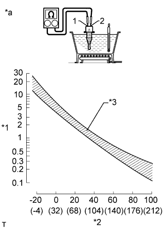

ДАТЧИК ТЕМПЕРАТУРЫ ВОЗДУХА НА ВПУСКЕ > ПРОВЕРКА |
| 1. INSPECT INTAKE AIR TEMPERATURE SENSOR |
|  |
Measure the resistance according to the value(s) in the table below.
| Tester Connection | Condition | Specified Condition |
| 1 - 2 | 20°C | 2.09 to 2.69 kΩ |
| *1 | Resistance kΩ |
| *2 | Temperature °C (°F) |
| *3 | Acceptable |
| *a | Component without harness connected (Intake Air Temperature Sensor) |